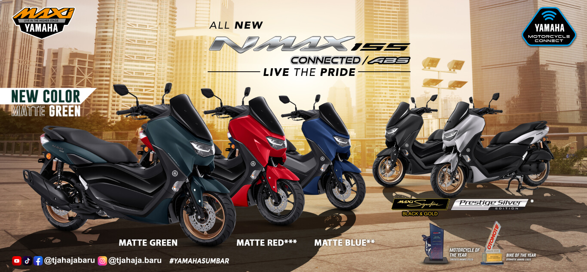
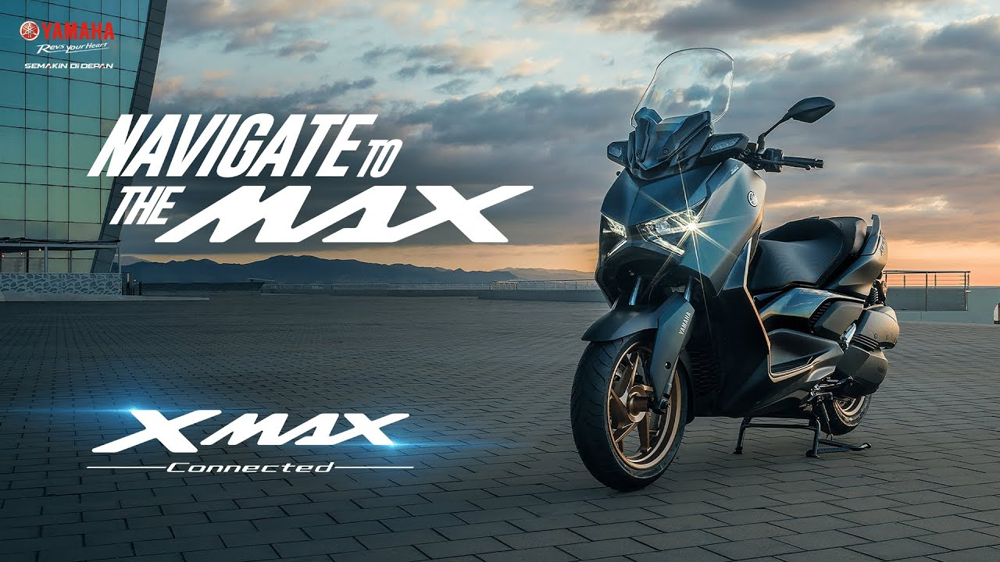
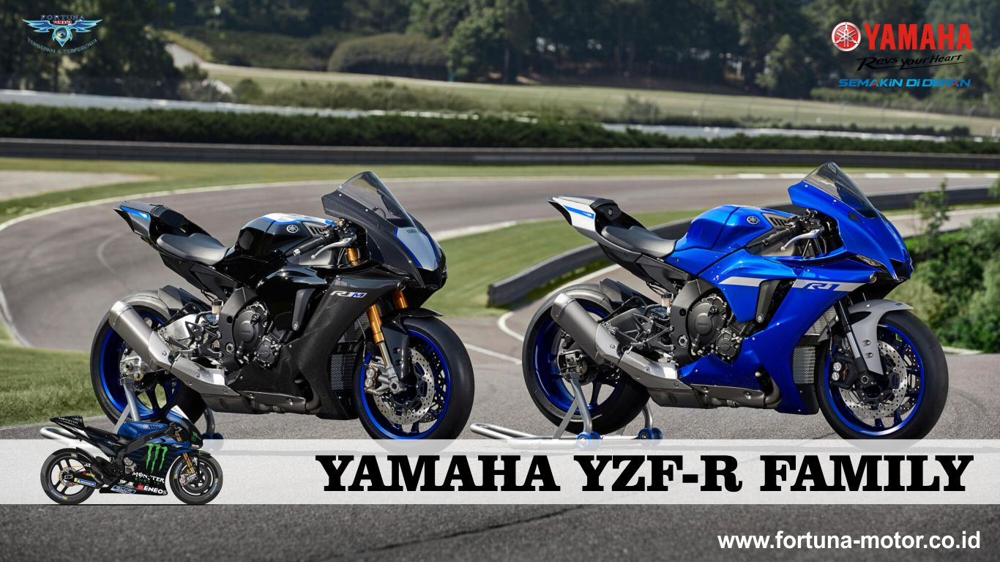
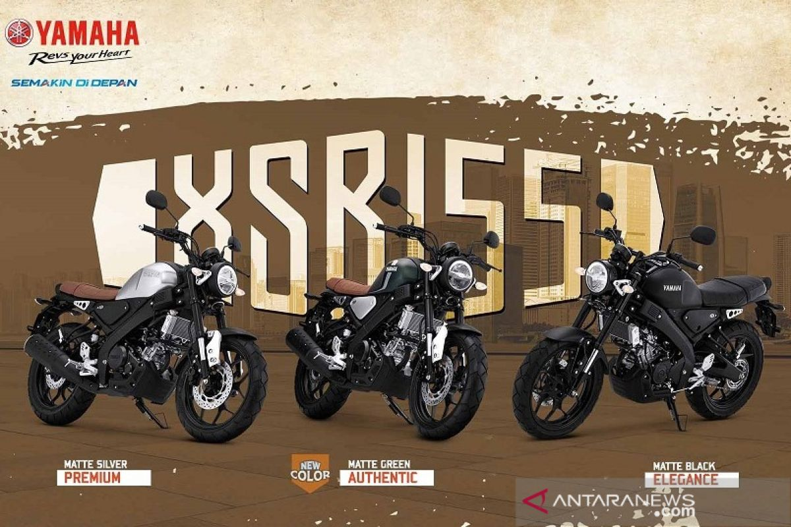

YAMAHA NMAX 155
Yamaha NMAX 155cc, May 29, 2024
Yamaha NMAX adalah sebuah skuter yang bertransmisi otomatis yang diproduksi oleh Yamaha di Indonesia sejak tahun 2015. Skuter ini pertama kali diluncurkan secara resmi pada tanggal 7 Februari 2015 di Sirkuit Sentul, Bogor, Jawa Barat.[1] Basis produksi skuter ini berada di Indonesia dan sudah diekspor ke berbagai negara sebagai model skuter global Yamaha.[2]
YAMAHA XMAX
xmAX, Sep 2, 2017
Yamaha XMAX Connected merupakan produk dari jajaran Yamaha MAXI. Yamaha XMAX Connected memiliki berbagai keunggulan terbaik sebagai skuter matik favorit
YAMAHA LEXI
Title description, Sep 2, 2017

Yamaha Lexi (juga dieja Yamaha LEXi) adalah sebuah skuter bertransmisi otomatis yang diproduksi oleh Yamaha sejak tahun 2018. Skuter ini pertama kali diluncurkan pada tanggal 26 Januari 2018 di Jakarta Selatan, Indonesia.[4][5][6] Skuter ini merupakan produk kelima yang berada di dalam deretan seri skuter "MAXI Yamaha" di Indonesia, setelah TMAX, XMAX 250, NMAX 155 dan Aerox 155. Skuter ini juga merupakan penerus tidak langsung dari Yamaha Xeon dan Aerox 125 LC. Hingga 2024, skuter ini menggunakan basis mesin yang serupa dengan NMAX 125.[7]
YAMAHA YZF-R FAMILY
Title description, Sep 2, 2017
YZF sendiri merupakan kependekan dari Yamaha Zinger Fourstroke. Artinya, motor Yamaha bermesin 4-tak. Sementara untuk MT series, diambil dari Master of Torque. Suzuki juga terkenal dengan GSX series, baik itu GSX-R series atau GSX-S series.
YAMAHA XSR-155
Title description, Sep 2, 2017
Yamaha XSR 155 mengusung desain legendaris dengan detail yang indah. Desain "klasik-modern" yang tidak lekang oleh waktu dengan konsep Sport Heritage, mulai dari model tangki Drip-Shaped, jok single seat klasik, serta lampu depan dan belakang berbentuk bulat & sudah memakai teknologi LED. Tidak hanya desainnya yang unik, spesifikasi dan fiturnya juga sangat berlimpah, serta mudah dimodifikasi sesuai dengan karakter dan gaya berkendara Anda.